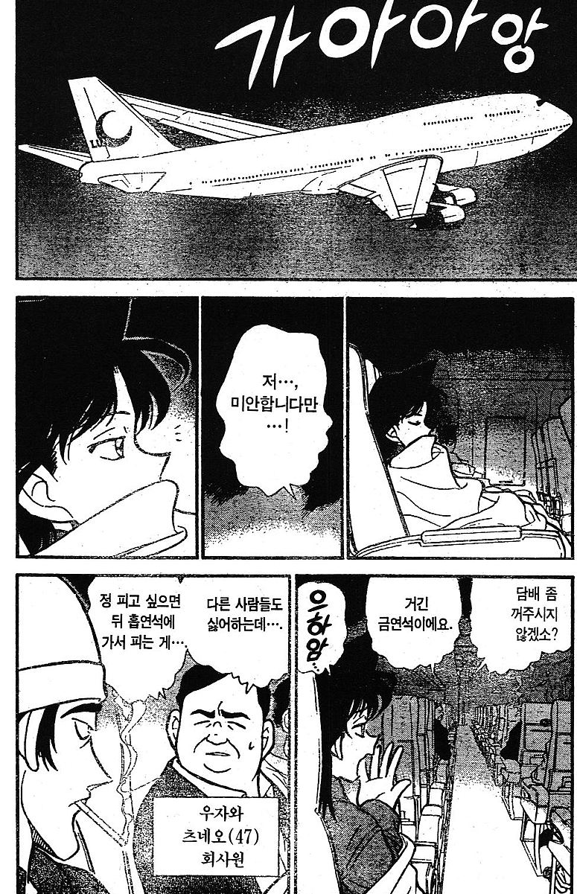

비행기에서 흡연 가능

비행기에서 흡연 가능
흡연석 금연석 칸막이로 막혀있고 대가리 위에 환풍기라도 달려있나...
그러게 옛날이라 그런거 더 없을텐데
그냥 의자 구획만 나눠놓은게 좆만한 비행기 실내에서 의미가 있나 ㅋㅋ
환풍기는 없지만 애초에 비행기가 환기 ㅈ되는걸로 알고있음. 연기 올라가면 바로 빨려들어갈거임.
과거 일본 항공사의 흡연 구역은 기체 가장 뒤쪽에 설치되어 있었고
기본적으로 비행기 내부 기류 흐름은 위에서 아래, 앞에서 뒤로 흘러가게 설계되어있고 대부분 꼬리방향에 있는 배출 밸브를 통해 외부로 방출됨
그리고 비행중에는 내부공기를 전부 교체하는데 2분 정도밖에 안걸릴 정도의 유량으로 비행 내내 새로운 공기를 계속 쉬지않고 밀어넣는 구조를 갖고있기 때문에 앞쪽은 담배연기로부터 자유로울 수 있음
궁굼하면 옆자리 사람 라면 먹을때 전방 화장실을 다녀오면서 냄새 변화 한번 느껴봐
조금만 이동해도 라면냄새 확 줄어드는걸 느낄 수 있을거야
")
옛날엔 담배쩐내 환기 시킨다고 문 살짝 열어두기도 했어
진짜?
https://youtube.com/shorts/Ra-KZLp8cEs?si=lkvuZ_oUANVF1Lt9
이게 환기시킨다고 열어두는 outflow valve랑 연결된 쪽문임 ㅇㅇ
비행기에서??
코난 세계관에서 저렇게 매너가 없다니 요절할 관상이군
실제로 뒤짐ㅇㅇ
저놈 죽인범인 찾는 에피소드였음
ㅅㅂㅋㅋ
ㅋㅋㅋㅋㅋㅋㅋㅋㅋ
담배펴서 죽임?
브레지어에 들어있는 와이어로 찔려서 죽음
담배피고 저 항의하는 남자 얼굴에 담배연기 내뿜다가 담배뺏고 그만하라는 여자한테 죽음
저런 행동을 했으면 자연사 아닌가...?
코난이 있는 곳에서 감히 금연석에서 담배를 피워? 너 오늘 한번 병풍 뒤에서 향 맡아보자.
향을 피울 것이냐 담배를 피울 것이냐
곧 살인날 것 같구만
담배 피다가 죽겠네
뿔에 찔려 죽기 전에
왼쪽 살인마/살해당한 피해자
둘 중 하나네...
담배 피는놈이 피해자(긴한데 죽을만했음)고 아저씨는 그냥 선량한 시민이야
담배피는 인물이 뭔가 원한을 산 것이 있는건가
금연석에서 담배핌 죽어마땅함
https://namu.wiki/w/%ED%95%98%EB%8A%98%EC%9D%84%20%EB%82%98%EB%8A%94%20%EB%B0%80%EC%8B%A4%2C%20%EC%BF%A0%EB%8F%84%20%EC%8B%A0%EC%9D%B4%EC%B9%98%EC%9D%98%20%EC%B2%AB%20%EC%82%AC%EA%B1%B4
나홀로집에2 보면
파리 갈때 지금 출국 수속같은 빡센 검사 아예 안함ㅋㅋㅋㅋ
나 어릴 때 어른들 담배피며 이륙했음..
팔걸이에 재떨이 있었고...
진짜로??????
90년대까지도 있었고
2000년도쯤 미국에서 전면금연 때려서
그 이후로 사라짐
비행기 전 노선에서 금연 때린 건 아시아나 항공이 세계 최초임. 부분 금연은 있었지만 전면금연은 한국에서 시작됨.
ㅇㅇ 아시아나서 금연 시작한건 암
그런데 세계적으로 퍼진건 미국 전면금연 때문이지
미국 들어가는 뱅기들도 포함돼서 해외 항공사들이 금연 다 스타트 한거니
ㅇㅇ 지금도 오래된 비행기엔 재떨이가 남아있는 경우들 있음.
담배피며 이륙하는 경우는 많았음 ㅋㅋㅋ
미래소년코난 인줄 알았네
의외로 옛날 비행기들 아직 굴리는 항공사 타면
재떨이 아직도 보임
환기가 잘되서 문제는 적었다던데
메이드인코리아보면 담배피더라
와 코난 원화 그림체 오랜만에 보는데 좋다
버스 좌석 뒤편에 재떨이 기억나네
이건 비행기 환기 시스템을 알아야됨 비행기는 환기가 위로 되는게 아니라 아래로 됨 그래서 냄새가 위로 퍼지지 않고 아래로 깔려서 담배 냄새는 주변말고는 잘안날수도 있음 그래서 비행기에서는 마음놓고 방귀를 껴도 냄새가 안남
이게 그 범행도구 찾는다고 미란이보고 브래지어벗어보라했던 그편인가
옛날엔 그랬다더군
지금도 가끔 저가항공 타다보면 화장실에 재떨이 있기도 하더라
화장실에 재떨이는 원래 있음
몰래 담배피다가 아무데나 꽁초 버려서 불 내지 말고 재떨이에 버리라고 있는거
버스에서도 담배피던 시절 있었음ㅋㅋㅋㅋㅋ
영화상영 시간에 연기 올라와서 스크린 가리면 진짜 개짜증남.
창문열고 비행하기
심지어 힌덴브루크 같은 비행선에도 흡연구역이 있었으니 뭐
저 담배핀놈은 뒤져도 싼놈이었음
흡연석이 의미가 있나?ㅋㅋㅋㅋ